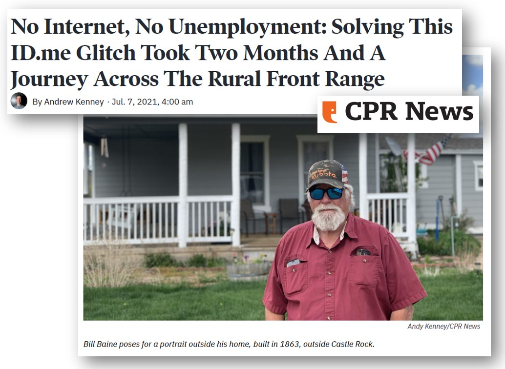
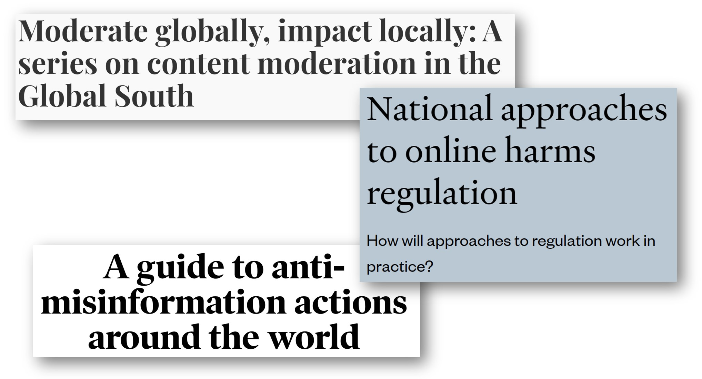

Not just Individual, but Societal Harms
When the USA government switched to facial identification service ID.me for unemployment benefits, the software failed to recognize Bill Baine’s face. While the app said that he could have a virtual appointment to be verified instead, he was unable to get through. The screen had a wait time of 2 hours and 47 minutes that never updated, even over the course of weeks. He tried calling various offices, his daughter drove in from out of town to spend a day helping him, and yet he was never able to get a useful human answer on what he was supposed to do, as he went for months without unemployment benefits. In Baine’s case, it was eventually resolved when a journalist hypothesized that the issue was a spotty internet connection, and that Baine would be better off traveling to another town to use a public library computer and internet. Even then, it still took hours for Baine to get his approval.

Baine was not alone. The number of people receiving unemployment benefits plummeted by 40% in the 3 weeks after ID.me was introduced. Some of these were presumed to be fraudsters, but it is unclear how many genuine people in need of benefits were wrongly harmed by this. These are individual harms, but there are broader, societal harms as well: the cumulative costs of the public having to spend ever more time on hold, trying to navigate user-hostile automated bureaucracies where they can’t get the answers they need. There is the societal cost of greater inequality and greater desperation, as more people are plunged into poverty through erroneous denial of benefits. And there is the undermining of trust in public services, which can be difficult to restore.
Potential for algorithmic harm takes many forms: loss of opportunity (employment or housing discrimination), economic cost (credit discrimination, narrowed choices), social detriment (stereotype confirmation, dignitary harms), and loss of liberty (increased surveillance, disproportionate incarceration). And each of these four categories manifests in both individual and societal harms.
It should come as no surprise that algorithmic systems can give rise to societal harm. These systems are sociotechnical: they are designed by humans and teams that bring their values to the design process, and algorithmic systems continually draw information from, and inevitably bear the marks of, fundamentally unequal, unjust societies. In the context of COVID-19, for example, policy experts warned that historical healthcare inequities risked making their way into the datasets and models being used to predict and respond to the pandemic. And while it’s intuitively appealing to think of large-scale systems as creating the greatest risk of societal harm, algorithmic systems can create societal harm because of the dynamics set off by their interconnection with other systems/ players, like advertisers, or commercially-driven media, and the ways in which they touch on sectors or spaces of public importance.
Still, in the west, our ideas of harm are often anchored to an individual being harmed by a particular action at a discrete moment in time. As law scholar Natalie Smuha has powerfully argued, legislation (both proposed and passed) in Western countries to address algorithmic risks and harms often focuses on individual rights: regarding how an individual’s data is collected or stored, to not be discriminated against, or to know when AI is being used. Even metrics used to evaluate the fairness of algorithms are often aggregating across individual impacts, but unable to capture longer-term, more complex, or second- and third-order societal impacts.
Case Study: Privacy and surveillance
Consider the over-reliance on individual harms in discussing privacy: so often focused on whether individual users have the ability to opt in or out of sharing their data, notions of individual consent, or proposals that individuals be paid for their personal data. Yet widespread surveillance fundamentally changes society: people may begin to self-censor and to be less willing (or able) to advocate for justice or social change. Professor Alvaro Bedoya, director of the Center on Privacy and Technology at the Georgetown University Law Center, traces a history of how surveillance has been used by the state to try to shut down movements for progress– targeting religious minorities, poor people, people of color, immigrants, sex workers and those considered “other”. As Maciej Ceglowski writes, “Ambient privacy is not a property of people, or of their data, but of the world around us… Because our laws frame privacy as an individual right, we don’t have a mechanism for deciding whether we want to live in a surveillance society.”
Drawing on interviews with African data experts, Birhane et al write that even when data is anonymized and aggregated, it “can reveal information on the community as a whole. While notions of privacy often focus on the individual, there is growing awareness that collective identity is also important within many African communities, and that sharing aggregate information about communities can also be regarded as a privacy violation.” Recent US-based scholarship has also highlighted the importance of thinking about group level privacy (whether that group is made up of individuals who identify as members of that group, or whether it’s a ‘group’ that is algorithmically determined - like individuals with similar shopping habits on Amazon). Because even aggregated anonymised data can reveal important group-level information (e.g., the location of military personnel training via exercise tracking apps) “managing privacy”, these authors argue “is often not intrapersonal but interpersonal.” And yet legal and tech design privacy solutions are often better geared towards assuring individual-level privacy than negotiating group privacy.
Case Study: Disinformation and erosion of trust
Another example of a collective societal harm comes from how technology platforms such as Facebook have played a significant role in elections ranging from the Philippines to Brazil, yet it can be difficult (and not necessarily possible or useful) to quantify exactly how much: something as complex as a country’s political system and participation involves many interlinking factors. But when ‘deep fakes’ make it “possible to create audio and video of real people saying and doing things they never said or did” or when motivated actors successfully game search engines to amplify disinformation, the (potential) harm that is generated is societal, not just individual. Disinformation and the undermining of trust in institutions and fellow citizens have broad impacts, including on individuals who never use social media.

Efforts by national governments to deal with the problem through regulation have not gone down well with everyone. ‘Disinformation’ has repeatedly been highlighted as one of the tech-enabled ‘societal harms’ that the UK’s Online Safety Bill or the EU’s Digital Services Act should address, and a range of governments are taking aim at the problem by proposing or passing a slew of (in certain cases ill-advised) ‘anti-misinformation’ laws. But there’s widespread unease around handing power to governments to set standards for what counts as ‘disinformation’. Does reifying ‘disinformation’ as a societal harm become a legitimizing tool for governments looking to silence political dissent or undermine their weaker opponents? It’s a fair and important concern - and yet simply leaving that power in the hands of mostly US-based, unaccountable tech companies is hardly a solution. What are the legitimacy implications if a US company like Twitter were to ban democratically elected Brazilian President Jair Bolsonaro for spreading disinformation, for example? How do we ensure that tech companies are investing sufficiently in governance efforts across the globe, rather than responding in an ad hoc manner to proximal (i.e. mostly US-based) concerns about disinformation? Taking a hands off approach to platform regulation doesn’t make platforms’ efforts to deal with disinformation any less politically fraught.
Individual Harms, Individual Solutions
If we consider individual solutions our only option (in terms of policy, law, or behavior), we often limit the scope of the harms we can recognize or the nature of the problems we face. To take an example not related to AI: Oxford professor Trish Greenhalgh et al analyzed the slow reluctance of leaders in the West to accept that covid is airborne (e.g. it can linger and float in the air, similar to cigarette smoke, requiring masks and ventilation to address), rather than droplet dogma (e.g. washing your hands is a key precaution). One reason they highlight is the Western framing of individual responsibility as the solution to most problems. Hand-washing is a solution that fits the idea of individual responsibility, whereas collective responsibility for the quality of shared indoor air does not. The allowable set of solutions helps shape what we identify as a problem. Additionally, the fact that recent research suggests that “the level of interpersonal trust in a society” was a strong predictor of which countries managed COVID-19 most successfully should give us pause. Individualistic framings can limit our imagination about the problems we face and which solutions are likely to be most impactful.
Parallels with Environmental Harms
Before the passage of environmental laws, many existing legal frameworks were not well-suited to address environmental harms. Perhaps a chemical plant releases waste emissions into the air once per week. Many people in surrounding areas may not be aware that they are breathing polluted air, or may not be able to directly link air pollution to a new medical condition, such as asthma, (which could be related to a variety of environmental and genetic factors).

There are many parallels between environmental issues and AI ethics. Environmental harms include individual harms for people who develop discrete health issues from drinking contaminated water or breathing polluted air. Yet, environmental harms are also societal: the societal costs of contaminated water and polluted air can reverberate in subtle, surprising, and far-reaching ways. As law professor Nathalie Smuha writes, environmental harms are often accumulative and build over time. Perhaps each individual release of waste chemicals from a refinery has little impact on its own, but adds up to be significant. In the EU, environmental law allows for mechanisms to show societal harm, as it would be difficult to challenge many environmental harms on the basis of individual rights. Smuha argues that there are many similarities with AI ethics: for opaque AI systems, spanning over time, it can be difficult to prove a direct causal relationship to societal harm.
Directions Forward
To a large extent our message is to tech companies and policymakers. It’s not enough to focus on the potential individual harms generated by tech and AI: the broader societal costs of tech and AI matter.
But those of us outside tech policy circles have a crucial role to play. One way in which we can guard against the risks of the ‘societal harm’ discourse being co-opted by those with political power to legitimise undue interference and further entrench their power is by claiming the language of ‘societal harm’ as the democratic and democratising tool it can be. We all lose when we pretend societal harms don’t exist, or when we acknowledge they exist but throw our hands up. And those with the least power, like Bill Baine, are likely to suffer a disproportionate loss.
In his newsletter on Tech and Society, L.M. Sacasas encourages people to ask themselves 41 questions before using a particular technology. They’re all worth reading and thinking about - but we’re listing a few especially relevant ones to get you started. Next time you sit down to log onto social media, order food online, swipe right on a dating app or consider buying a VR headset, ask yourself:
- How does this technology empower me? At whose expense? (Q16)
- What feelings does the use of this technology generate in me toward others? (Q17)
- What limits does my use of this technology impose upon others? (Q28)
- What would the world be like if everyone used this technology exactly as I use it? (Q37)
- Does my use of this technology make it easier to live as if I had no responsibilities toward my neighbor? (Q40)
- Can I be held responsible for the actions which this technology empowers? Would I feel better if I couldn’t? (Q41)
It’s on all of us to sensitise ourselves to the societal implications of the tech we use.